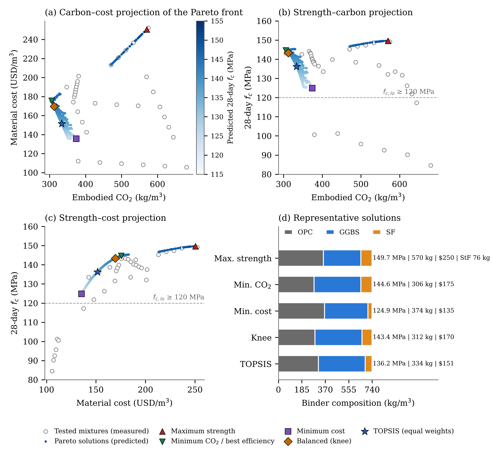

The compressive strength of ultra-high-performance concrete (UHPC) with supplementary cementitious materials depends nonlinearly on binder composition, fibres, curing temperature and age. Artificial neural networks (ANNs) initialized by Atom Search Optimization (ASO), Adaptive Equilibrium Optimizer (AEO) or Wind-Driven Optimization (WDO) and refined by Levenberg–Marquardt formed ten-network ensembles trained on 381 records of 38 mixtures containing ground granulated blast-furnace slag (GGBS), silica fume (SF), steel and polypropylene fibres, cured at 28–120 °C. Test-mixture RMSE was 2.13 MPa for selected ANN-AEO, 2.02–2.22 MPa for the other ANNs and 2.34 MPa for Gaussian process regression (GPR); ANN-AEO was significantly more accurate than random forest and linear regression, but not than the standalone ANN, ANN-ASO, ANN-WDO or GPR, and under leave-one-mixture-out validation the standalone ANN ensemble generalized best (2.84 MPa; GPR 3.56 MPa). Ensemble-normalized conformal 95% intervals covered 100% of test observations (mean width 10.1 MPa), and constraint-consistent permutation importance matched measured factor effects (ρ = 0.94). Replacing 40–50% of cement with GGBS plus 12% SF cut embodied CO₂ from 680 to 306–366 kg/m³ and raised 28-day strength from 84.6 to 143–144 MPa. NSGA-III found lower-carbon alternatives of equal predicted strength for 21 of 26 tested mixtures above 120 MPa. Code and a web tool are released.

Hybrid ANNs. Networks with one or two hidden layers, eight inputs (water, cement, SF, GGBS, curing temperature, age, steel fibre, PP fibre) and [−1, 1] min–max scaling fitted on the training mixtures. Hidden layers, neurons, activation, metaheuristic iterations and Levenberg–Marquardt epochs were selected for each model by grouped cross-validation. Every network is trained by Levenberg–Marquardt (best weights on an inner validation set); the hybrids start from the best weights found by ASO, AEO or WDO (population 50; fitness on inner-training and inner-validation mixtures), the standalone ANN from random weights. Every model is a ten-network ensemble.
Mixture-level validation. 28 training, 5 validation and 5 test mixtures, hyperparameters by grouped 5-fold CV, ten-network ensembles, LOMO cross-validation over all 38 mixtures with statistical tests, and MLR, random forest and GPR baselines.
Calibrated uncertainty. Split-conformal 95% intervals calibrated on the validation mixtures, with widths scaled by the ensemble spread; coverage reported with Clopper–Pearson intervals, mean width and the Winkler score.
Domain-restricted optimization. NSGA-III (population 300, 500 generations, five runs) maximizes strength and minimizes A1–A3 embodied CO₂ and material cost over SF, GGBS and fibre dosage, with binder 740 kg/m³, absolute volume, the convex hull of tested binders, a nearest-neighbour extrapolation limit and a lower 95% bound ≥ 120 MPa (ensemble-normalized interval). The front was verified against exhaustive enumeration (hypervolume ratio 0.999). Representative solutions and TOPSIS follow Wakjira & Goshu (2026).
| Model | Test R² | Test RMSE (MPa) | LOMO RMSE (MPa) | PICP (%) | MPIW (MPa) |
|---|---|---|---|---|---|
| ANN (LM) ensemble | 0.997 | 2.22 | 2.84 | 98.1 | 11.79 |
| ANN-ASO ensemble | 0.997 | 2.16 | 2.94 | 100.0 | 11.81 |
| ANN-AEO ensemble (selected) | 0.997 | 2.13 | 3.33 | 100.0 | 10.12 |
| ANN-WDO ensemble | 0.997 | 2.02 | 3.02 | 100.0 | 10.29 |
| MLR | 0.964 | 7.38 | 8.52 | 96.2 | 29.12 |
| Random forest | 0.991 | 3.60 | 4.38 | 98.1 | 19.20 |
| GPR | 0.996 | 2.34 | 3.56 | 96.2 | 9.88 |
ANNs: ten-network ensembles; intervals are ensemble-normalized split-conformal (ANNs) or constant split-conformal (baselines), calibrated on the validation mixtures. ANN-AEO was selected on the validation mixtures; on the test mixtures it was significantly more accurate than RF and MLR (Wilcoxon, p < 0.05) but not significantly different from ANN (LM), ANN-ASO, ANN-WDO and GPR. Under LOMO, the ANN (LM) ensemble generalized best.
All calculations run in your browser with the trained networks in model.js; nothing is uploaded. Predictions are valid only inside the experimental domain (binder 740 kg/m³, w/b 0.200–0.214, one fibre type, 12.5 mm coarse aggregate, curing 28–120 °C, age 1–56 days); the tool flags extrapolation.
Enter a mixture, or load a tested one. Cement is the remainder of the 740 kg/m³ binder.
Target 28-day strength (28 °C curing). The tool returns the Pareto-optimal mixture whose lower 95% prediction bound meets the target with the lowest embodied CO₂, and the lowest-cost alternative.
Set the importance of each objective. TOPSIS ranks the Pareto solutions by closeness to the ideal mixture.
Interpolated solutions have not been cast; confirm them experimentally before use.
code/reproduce.py: retrains every model and regenerates Tables 8, 13 and 14 and the importance values.code/importance.py: importance of the design factors and their measured effects (Figure 19).code/export_models.py: trains the representative networks and writes model.json, model.js and matlab/UHPC_models.mat.code/optimize_mix.py: NSGA-III optimization, representative solutions, TOPSIS and inverse design (Tables 15–16, Figure 24).matlab/UHPC_predict.m and UHPC_inverse_design.m: prediction with 95% intervals in MATLAB.@article{kumar2026hybridann,
title = {Uncertainty-aware hybrid artificial neural networks for strength
prediction and mix design optimization of sustainable
ultra-high-performance concrete},
author = {Kumar, Divesh Ranjan and Prakash, Shubhum and
Senjuntichai, Teerapong and Kaewunruen, Sakdirat},
journal = {Journal of Asian Architecture and Building Engineering},
year = {2026},
note = {Under review}
}